plotfunc3d(sin(x^2 + y^2), cos(x^2 - y^2), x = 0..1, y = 0..2)
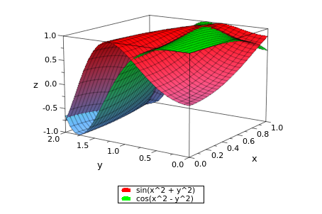
plotfunc3d(x^2 - z, x^2+y^2-1,x=0..1,y=0..1,z=0..1)
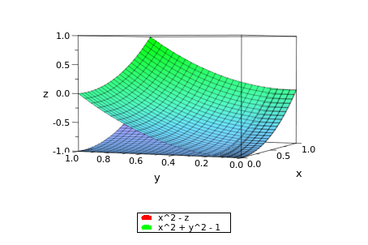
plotfunc3d(x^2-z, x^2+y^2-1,x=-10..10,y=-10..10,z=-10..10)
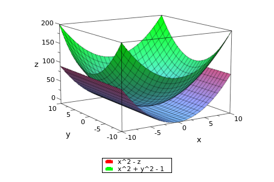
ezplot3(sin(t), cos(t), sin(t)^2, [-10,10])
plot::Curve3d([sin(t),cos(t),sin(t)^2],t=-10..10)
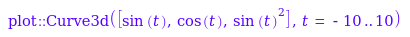
display(%)
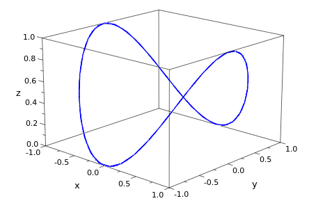
plotfunc3d(x^2-z, x^2+y^2 - 1, x=-10..10, y=-10..10, z=-10..10)
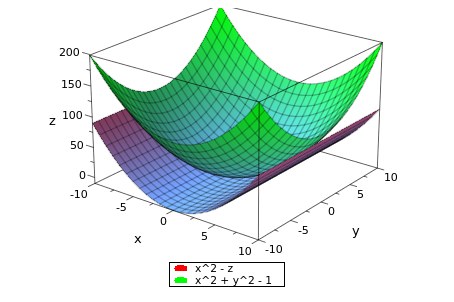
plotfunc3d(x^2-z, x^2+y^2 - 1, x=-50..50, y=-50..50, z=-50..50)
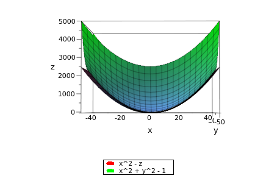
plotfunc3d(x^2-z, x^2+y^2+z-1, x=-10..10,y=-10..10,z=-10..10)
plotfunc3d(x^2+y^2+z-1, x=-10..10,y=-10..10,z=-10..10)
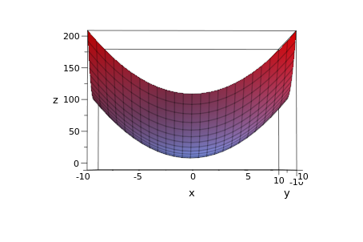
sin(0.5)^2
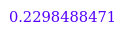
cos(0.5)^2
sin(0.5)^2 + cos(0.5)^2
sin(0)

sin(0)^2

sin(1)

plotfunc3d(sqrt(x^2 + y^2) - z, x=-10..10, y=-10..10, z=-10..10)
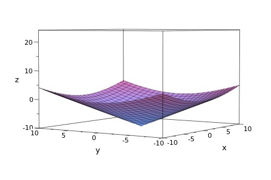
plotfunc3d(sqrt(x^2 + y^2), 1+y, x=-10..10,y=-10..10)
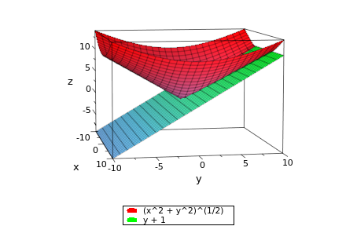
plotfunc3d(x^2 + y^2 - z^2, 1+y, x=-10..10, y=-10..10, z=-10..10)
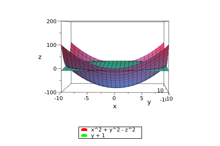
plotfunc3d(x^2, -(x^2)-(y^2)+1, x=-10..10,y=-10..10,z=-10..10)
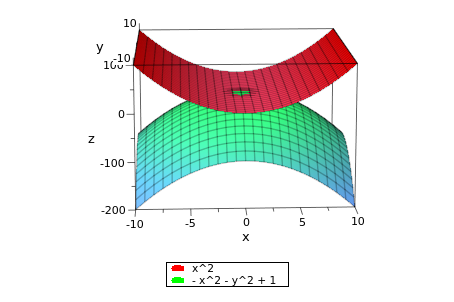
plotfunc3d(x^2, -(x^2)-(y^2)+1, x=-5..5,y=-5..5,z=-5..5)
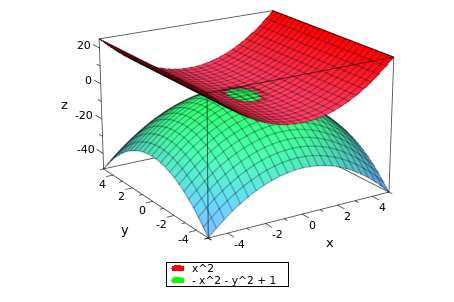
plotfunc3d(x^2, -(x^2)-(y^2)+1, x=-2..2,y=-2..2,z=-2..2)

plotfunc3d(z - 1, sqrt(z^2 - x^2), x=-5..5, y=-5..5, z=-5..5)
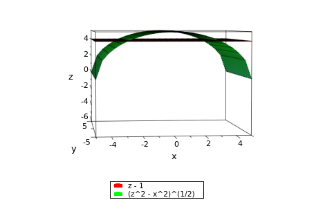